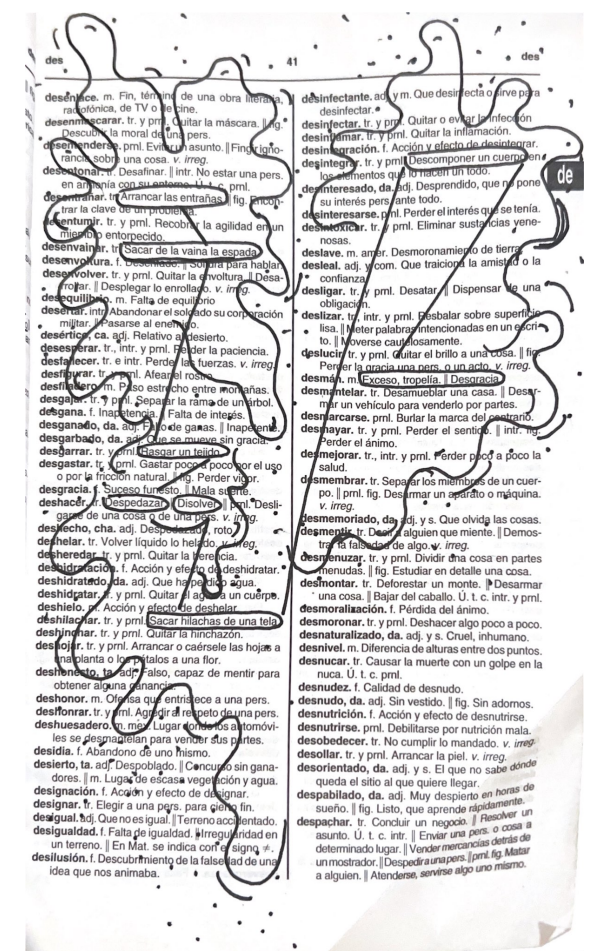
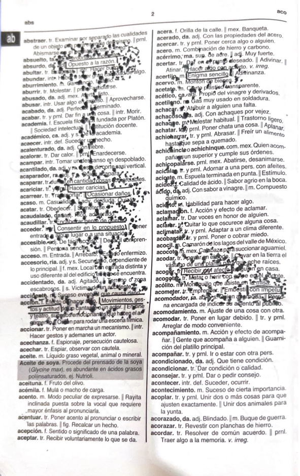
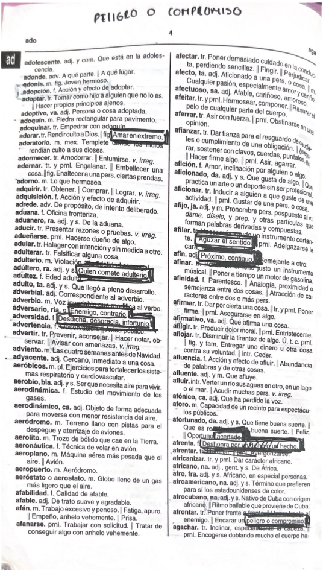
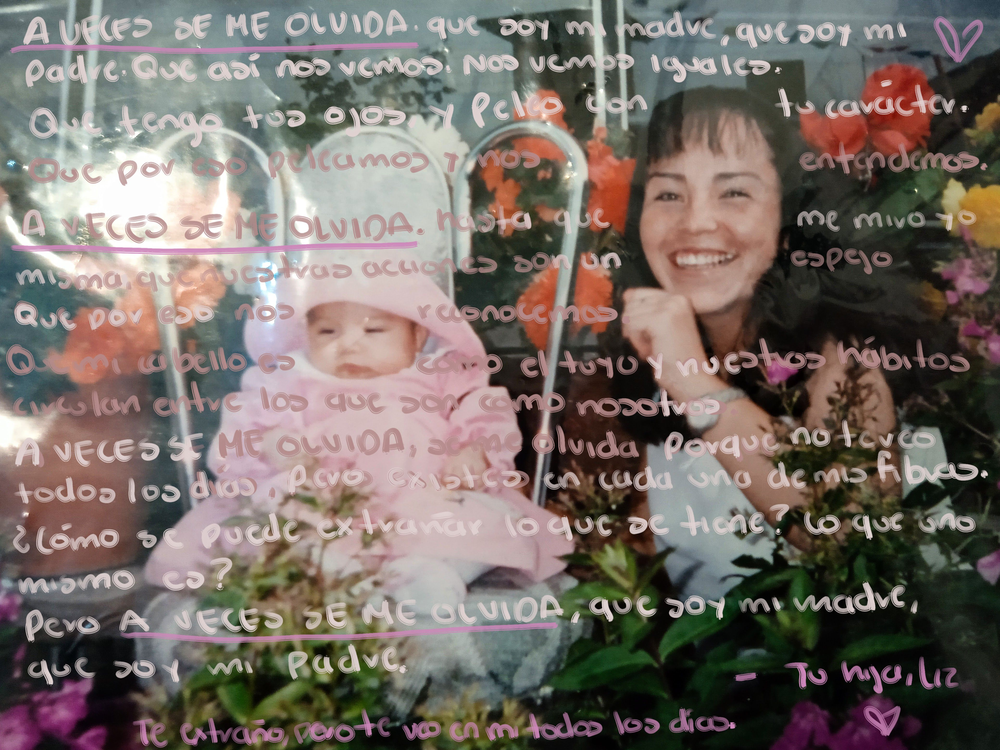
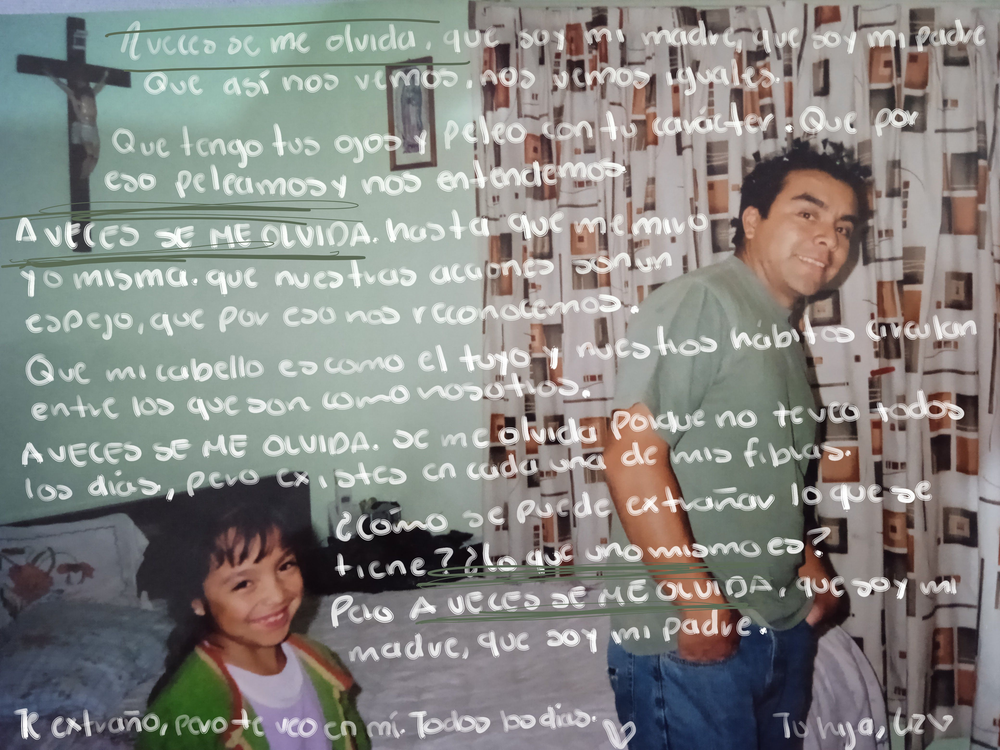

SENTIMIENTO
2024
Videopoema
A través de la escritura, los visuales y el diseño sonoro, SENTIMIENTO explora la crudeza del sentir. Siendo fiel al propósito de la artista: traducir la visceralidad de sentimientos y sensaciones a través del lenguaje artístico.
A Raya
2024-presente
Hilación de narrativas
Todas las palabras de todos los poemas están ya escritas. Son las líneas y las entrelíneas las que dibujan los propósitos.
A raya es un ejercicio de creación, de exploración del diccionario y los significados que guarda. Sobre denotar las líneas y su esencialidad al crear narrativas.
 A Veces
2024
Poema / Intervención Fotográfica
Esta reflexión nace de mirarme al espejo notando el cambio de mis facciones a través del tiempo y como los rostros de mis padres se mezclan en la nueva madurez del mío.
 Absurdos y entramados
2024
Poemario Web
¿Qué se siente sentir menos?
Mi madre solía decirme que siento mucho, y desbordaba.

Cada emoción es completamente gigante, incluso desastroza. Así que aprendí a desbarajarlas, a través del lenguaje escrito, cada vez el sentir se hacía más específico.
Sé lo que se siente, cómo se siente y la forma en la que combina.
Comienza a leer, mira mi corazón deshilacharse sinceramente ante tus ojos y guárdalo entre tus dientes.